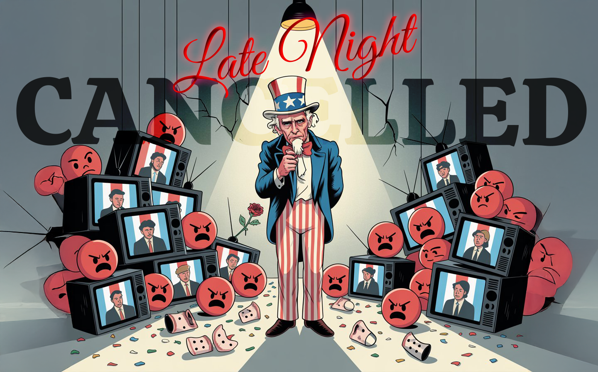

America’s Broken Funny Bone
We've weaponized humor, chosen outrage over laughter, and turned comedy into tribal warfare. America's funny bone is amputated. The punchline? We can't laugh together. Welcome to the paradox: the joke's on us, but we've forgotten how to laugh.


According to Johnny Carson,
"If it weren't for the brief respite we give the world with our foolishness, the world would see mass suicide in numbers that compare favorably with the death rate of lemmings."

This was the only thing that was keeping me sane... laughter. Isolated joy in a world growing increasingly joyless. That's why I had to say something. To reach out into the void, hoping to find others who still remember how to laugh. Because now, in the silence after the punchline, I'm even more alone than I was before.
We’re Not Allowed to Laugh Together Anymore
An archaeological dig through the rubble of late night discourse
Courtesy of your friendly neighborhood, Khayyam 🌶️

We're living through the death of shared reality, and nobody wants to admit it because the implications are too terrifying. But here's the thing about existential crises: they're actually hilarious once you stop pretending they're not happening.
When I heard about Colbert’s cancellation that night, I knew it wasn’t just about one comedian losing his platform, it was the final snap of the last remaining thread connecting us to a time when we all could still laugh at the same jokes. We've officially entered the post-humor era of American politics, where even our mechanisms for processing absurdity have become too politically charged to function.
Think about what late night comedy actually was: a nightly ritual where millions of people gathered around the same cultural campfire to collectively process the day's insanity. Colbert, Stewart, even Carson before them—they weren't just entertainers, they were grief counselors for democracy. They helped us metabolize political trauma by transforming it into something we could laugh at instead of something that would drive us completely insane.
But that system depended on something we've completely lost: the ability to agree that certain things are objectively ridiculous.
The Deathly Echo Chambers of Shared Reality

Here's what happened to our souls: we shattered them into perfectly curated echo chambers, then convinced ourselves this was progress. Remember when we could all quote the same SNL skits at the water cooler? Now, half of us are arguing about the latest TikTok trend while the other half doesn't even know what TikTok is. We used to have three television networks and everybody watched the same news. It was terrible for information diversity, but it created something we didn't realize was precious until it was gone—a shared foundation of agreed-upon reality that comedy could build on.
Now we have infinite information sources, and somehow we know less about each other than ever. Your Facebook feed and mine might as well be broadcasting from different planets. When we can't even agree on basic facts, how can we possibly laugh at the same jokes?
The result is that comedy has become partisan ammunition instead of collective therapy. Every joke is now a political statement, every laugh a declaration of tribal allegiance. We've weaponized humor the same way we've weaponized everything else, and in doing so, we've destroyed its actual power.
The Neuroscience of Shared Laughter
When people laugh together, their neural patterns synchronize. Shared laughter releases bonding chemicals while reducing stress hormones. But this only works when the laughter is genuine—when people truly find the same things funny. What we have now is performative laughter: forced reactions to jokes that confirm existing beliefs while feeling threatened by humor that challenges them.
We've turned comedy into a sorting mechanism instead of a bonding mechanism. Late night shows became team sports where the point wasn't to laugh together but to laugh at the other side. The audience wasn't seeking relief—they were seeking validation.
The Addiction to Outrage

Here's the uncomfortable truth: we killed comedy because we got addicted to something more powerful—righteous indignation. Outrage provides a much more potent neurochemical hit than humor. When you're morally superior to someone, your brain floods with dopamine and serotonin. When you're just laughing at absurdity, you feel temporarily better, but you don't get that addictive rush of being right.
Ask yourself: When was the last time you shared a laugh with someone who disagrees with you politically? When was the last time you felt angry at a headline? Which feeling do you chase more often?
We chose the drug of perpetual anger over the medicine of shared laughter, and now we're detoxing in real time.
The Colbert situation is just the latest symptom of our collective emotional overdose. We've become so hypersensitive to anything that might be offensive that we can't tolerate the fundamental unpredictability that makes humor work. Comedy requires a willingness to be surprised, to have your expectations subverted, to occasionally be uncomfortable. We've decided that comfort is more important than connection.
Comedy as Cultural Medicine

What makes this moment particularly strange is that we're simultaneously over-documenting and under-appreciating the role of humor in our cultural evolution.
The ancient Greeks had comedy festivals where playwrights competed to make the most incisive social commentary through humor. Medieval court jesters were the only people allowed to tell kings uncomfortable truths without losing their heads. During the Soviet era, political jokes passed whispered from person to person became a form of resistance and psychological survival.
Comedy has always served a dual purpose: to entertain, yes, but more importantly, to speak dangerous truths in a way that makes them digestible. When direct criticism becomes too risky or too painful, humor steps in as our collective pressure valve. The fact that we're clamping down on that valve right when the pressure is at its highest isn't just bad cultural policy—it's terrible evolutionary strategy.
A Field Guide to Laughing Through Chaos
So how do we laugh our way through this? First, we have to admit that most of what we're fighting about is genuinely absurd. The fact that grown adults are having serious political debates about whether reality exists should be hilarious, not terrifying. The fact that we've turned everything into a partisan issue—including comedy itself—is the kind of cosmic joke that would make ancient Greek playwrights weep with laughter.
Second, we need to remember that humor is a choice. You can choose to find things funny instead of offensive. You can choose to laugh at your own side's contradictions instead of only mocking the other team. You can choose to see the shared humanity in our collective confusion instead of using it as evidence that your enemies are evil.
Third, we need to rediscover the difference between laughing at people and laughing with them. The best comedy has always punched up at power and absurdity, not down at vulnerability and difference. When humor becomes cruelty, it stops being funny and starts being just another form of violence.
The Radical Act of Shared Laughter
The real tragedy isn't that we've lost our comedy shows—it's that we've lost our ability to laugh at ourselves. Americans used to be famous for our irreverent humor, our willingness to mock our own institutions and leaders, our refusal to take anything too seriously. Now we treat every political position like a religious doctrine and every joke like a potential hate crime.
Last week, I tried an experiment. I invited two friends over for dinner—one who watches Fox News religiously, and another who has a Bernie Sanders tattoo. Instead of avoiding politics, I brought up a news story we'd all heard about, but I framed it in terms of the absurdity of the entire situation rather than taking sides. To my shock, we ended up laughing together—not at each other, but at the circus-like nature of modern discourse itself. For one evening, we weren't representatives of opposing tribes; we were just three confused humans trying to make sense of a world gone mad.
But here's the thing about hitting rock bottom: it gives you something solid to push off from. When everything becomes so absurd that the absurdity itself becomes absurd, you either laugh or you lose your mind. I'm voting for laughter.
We can rebuild our capacity for shared humor, but it requires something radical: the willingness to be wrong, to be surprised, to be occasionally uncomfortable in service of connection rather than constantly comfortable in our isolation.
Here's a challenge: This week, try to find something genuinely funny about your own political beliefs. Share that humor with someone who disagrees with you. It's not about changing minds—it's about remembering that we're all human, all a little bit ridiculous, and all in this together.
The alternative is a society where nobody laughs together anymore because we're all too busy being right. And if that's not funny in the darkest possible way, I don't know what is.
The Digital Wasteland of Algorithmic Divides

We're not going to solve our political problems by being more serious about them—we're going to solve them by remembering how to laugh at them together. The moment we can all agree that this entire situation is ridiculous is the moment we can start building something better.
Perhaps what's most alarming isn't just that we've lost our shared comedic language, but that nothing has emerged to replace it. We're wandering through a digital wasteland where algorithmic tribes clash without ever truly communicating. The platforms that promised to connect us have instead isolated us in hermetically sealed reality bubbles where truth is whatever gets the most engagement.
In this landscape, comedy becomes impossible because it requires shared context. A joke only lands when both teller and audience recognize the same absurdity. Without that mutual understanding, humor gets lost in translation between parallel realities.
The irony is painfully obvious: in an age with more communication channels than ever, we've never been worse at communicating. We mistake volume for substance, outrage for insight, and mockery for wit. Meanwhile, the algorithms profit from our division, serving us increasingly extreme content that confirms our beliefs rather than challenging them.
The great comedians understood something we've forgotten: that laughter is an act of recognition. When we laugh together, we're acknowledging that we see the same contradictions in the human experience. That shared recognition is the first step toward rebuilding something resembling a common reality.

Until then, we're stuck in a tragic comedy where everyone's forgotten the punchline is supposed to bring us together, not drive us apart.
The joke, as always, is on us. The question is whether we're still capable of getting it. And more importantly, whether we're brave enough to laugh at it together.
Don't miss the weekly roundup of articles and videos from the week in the form of these Pearls of Wisdom. Click to listen in and learn about tomorrow, today.


Sign up now to read the post and get access to the full library of posts for subscribers only.
 🌶️ iamkhayyam
🌶️ iamkhayyam
Khayyam Wakil is a cultural commentator and self-proclaimed comedy archaeologist who studies both humor and intelligence as complex systems. With a keen eye for the absurd and a background in machine learning, he explores how shared laughter - or its absence - reflects deeper patterns in our cultural operating system, reminding us that in a world gone mad, sometimes the only sane response is to laugh.